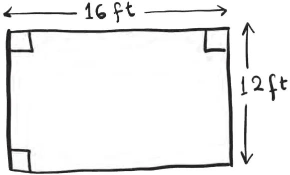

Sameeksha is building her new house. The main room of the house is 12 ft by 16 ft. She feels that the room would look nice if the floor is covered with square tiles of the same size. She also wants to use as few tiles as possible, and for the length of the tile to be a whole number of feet. What size tiles should she buy? Let us explore how to find the largest square tile that can be used. The breadth of the room is 12 ft and the length is 16 ft.

For the tiles to fit the breadth of the room exactly, the side of the tile should be a factor of 12. Similarly, for the tiles to fit the length of the room exactly, the side should be a factor of 16. So the side of the tile should be a factor of both 12 and 16. What are the common factors of 12 and 16? The factors of 12 are 1, 2, 3, 4, 6, 12. The factors of 16 are 1, 2, 4, 8, 16. The common factors are 1, 2, and 4.
So, the square tiles can have sides 1 ft, 2 ft, and 4 ft. Among these, she should use the largest sized square tile. Can you explain why? Therefore, she needs tiles of size 4 ft.
How many tiles of this size should she purchase?
What if Sameeksha did not insist on the length of the tile to be a whole number of feet and the length could be a fractional number of feet? Would the answer change?
The Highest Common Factor (HCF) of two or more numbers, is the highest (or greatest) of their common factors. It is also known as the Greatest Common Divisor (GCD).
In the previous problem, 4 is the HCF of 12 and 16.
We can draw rough diagrams like the one shown on the previous page to visualise the given scenario. It may help in understanding and solving.
Lekhana purchases rice from two farms and sells it in the market. She bought 84 kg of rice from one farm and 108 kg from the other farm. She wants the rice to be packed in bags, so each bag has rice from only one farm and all bags have the same weight that is a whole number of kg. If she wants to use as few bags as possible, what should the weight of each bag be?
To divide 84 kg of rice into bags of equal weight, we need the factors of 84. Similarly, for 108, we need the factors of 108.
Factors of 84 — 1, 2, 3, 4, 6, 7, 12, 14, 21, 28, 42, and 84.
Factors of 108 — 1, 2, 3, 4, 6, 9, 12, 18, 27, 36, 54, and 108.
Since, Lekhana wants to use bags of the same weight for both farms, the weight of the bag should be a common factor. The common factors of 84 and 108 are
1, 2, 3, 4, 6, and 12.
She can use any of these weights to pack rice from both farms in bags of equal weight. But, she wants to minimise the number of bags. Which weight should she choose to minimise the number of bags?
Do you remember the ‘Jump Jackpot’ game from Grade 6 (see the chapter ‘Prime Time’)? Grumpy places a treasure on a number and Jumpy chooses a jump size and tries to collect the treasure. In each case below, the two numbers upon which treasures are kept are given. Find the longest jump size (starting from 0) using which Jumpy can land on both the numbers having the treasure.
- 14 and 30
- 7 and 11
- 30 and 50
- 28 and 42
Is the longest jump size for the numbers the same as their HCF? Explain why it is so.
So far, we have been listing all the factors to find the HCF. This can become cumbersome for numbers with many factors, as you would have observed for the numbers 30 and 50, and 28 and 42.
Sometimes, we may also miss some factors which can lead to errors.
Can this process be simplified? Can it be made more reliable?
It turns out that using prime factorisation can simplify the process. We will start by revisiting primes and prime factorisation.